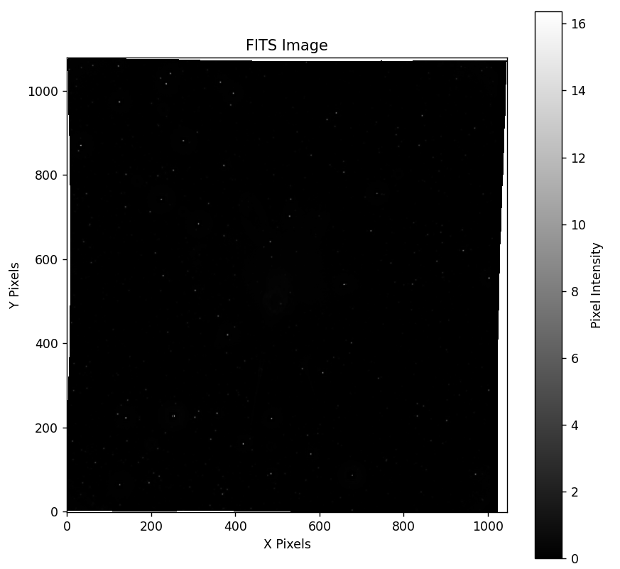

Introduction
Astrophysics brings together high-performance computing and enormous raw datasets, turning them into information we can reason about. Python is a natural fit for that work: readable, widely used in data science, and backed by libraries built for scientific computing.
One of those libraries is AstroPy — a community-driven, open-source package for core astronomy tasks. It handles FITS files, VO tables, ASCII tables, physical constants, units, celestial coordinates, and time calculations with standardized data structures.
Whether you are working with complex datasets or converting celestial coordinates, AstroPy lets you focus on the science rather than reinventing formats and unit logic. For data science students stepping into astronomy, it is a practical starting point. See the AstroPy documentation for the full feature set, or join the community if you want to contribute.
Installation
Install AstroPy with pip:
python -m pip install astropyMake sure your Python environment is set up first. You can also install it from PyCharm, VS Code, or any other IDE that manages packages for you.
Units and conversions
AstroPy makes unit conversion straightforward. The example below estimates the speed of light between the Sun and Earth during winter solstice, and reports it in both light-years per second and km/s.
from astropy import units
# Winter solstice (approx. Sun–Earth distance)
distance_se = 147_090_000 * units.km
distance_se_ly = distance_se.to(units.lightyear)
time = 497 * units.s
speed = distance_se_ly / time
print(
"Speed of light (ly/s) = {:.10f}".format(speed)
)
print(
"Speed of light (km/s) = {:.4f}".format(
speed.to(units.km / units.s)
)
)Speed of light (ly/s) = 0.0000000313 lyr / s
Speed of light (km/s) = 295955.7344 km / sCelestial coordinates
In simple terms, Right Ascension (RA) is celestial longitude and Declination (Dec) is celestial latitude. AstroPy’s coordinates module works with that system directly:
from astropy.coordinates import get_sun
from astropy.time import Time
my_time = Time.now()
print(get_sun(my_time))
print(get_sun(my_time).to_string(style="hmsdms"))SkyCoord (GCRS: obstime=2024-12-28 03:15:20.792177,
obsgeoloc=(0., 0., 0.) m,
obsgeovel=(0., 0., 0.) m / s):
(ra, dec, distance) in (deg, deg, AU)
(277.10557264, -23.27546755, 0.98343585)
18h28m25.33743467s -23d16m31.68318593s
The first form is degrees; the second is the hmsdms format used widely in astronomy:
| Right Ascension (RA) | Declination (Dec) |
|---|---|
| H — Hours | D — Degrees |
| M — Minutes | M — Minutes |
| S — Seconds | S — Seconds |
So at the time of writing, the Sun was at about
18h 28m 25.33s RA and −23° 16′ 31.68″ Dec.
Working with FITS files
FITS (Flexible Image Transport System) files are the standard way astronomy stores multi-dimensional arrays and tables. Below, AstroPy opens a FITS file, prints its structure, and plots the primary image with Matplotlib.
from astropy.io import fits
import matplotlib.pyplot as plt
hdulist = fits.open("BlogExample.FTZ")
hdulist.info()
data = hdulist[0].data
print(data.shape)
hdulist.close()
plt.figure(figsize=(8, 8))
plt.imshow(data, cmap="gray", origin="lower")
plt.colorbar(label="Pixel Intensity")
plt.title("FITS Image")
plt.xlabel("X Pixels")
plt.ylabel("Y Pixels")
plt.savefig("Image.png")
plt.show()Filename: BlogExample.FTZ
No. Name Ver Type Cards Dimensions Format
0 PRIMARY 1 PrimaryHDU 68 (1046, 1079) float32
1 EXPOSURE 1 ImageHDU 8 (1046, 1079) float32
2 QUALITY 1 ImageHDU 9 (1046, 1079) int16
(1079, 1046)
The HDU list describes the file structure; the plot is the primary image array rendered in grayscale.
Conclusion
AstroPy is a solid toolkit for computational astronomy: units, coordinates, and FITS handling cover a large share of day-to-day work. If you already know Python for data science, this library is a direct bridge into astrophysics projects.
Start with the basics above, then dig into the official docs for more specialized modules. Happy exploring.